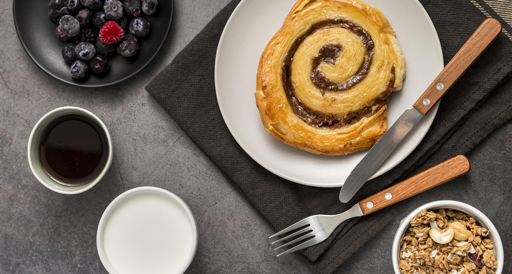

aqui una foto de unos ricos brownies, ideales para los dias más frios, en especial para estudiar C3 :)))
y aquí un rico rollo de canela, es dificil de preparar pero ricoo
Espero que te haya gustado!! Muchas graciiiaaasssss